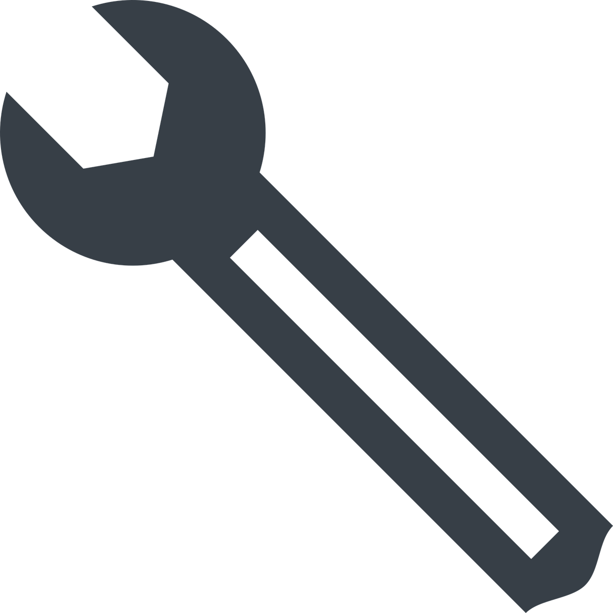

Mes compétences

Front-end
HTML
CSS / SASS
Javascript / React
Bootstrap / Responsive design
Back-end
Node.js / express.js
MongoDB
Création et usage d'API
Analyse de données / débug et tests

Outils
VS Code / Figma
ChatGPT / Postman
npm / yarn / divers extensions
Git / Github